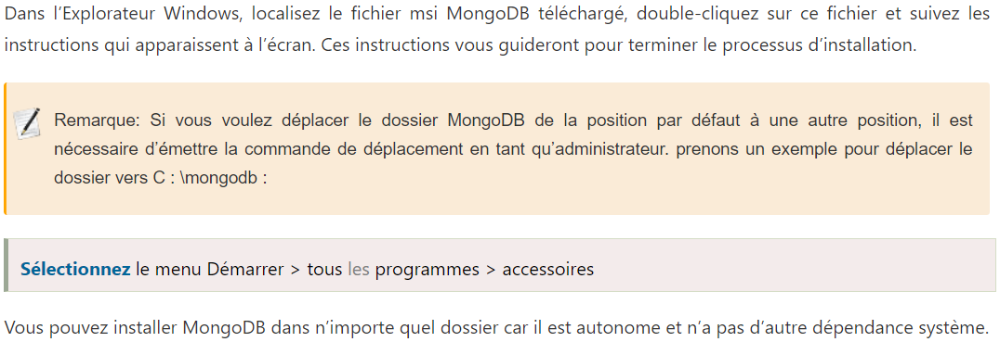
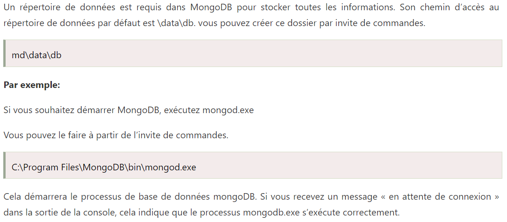

Formation Base de Données
Gratuite
MongoDB
MongoDB est une base de données évolutive, open source, haute performance et orientée document.
Configuration et installation de MongoDB

Exigence pour stocker des données

Nota Bene
Tenez compte des éléments suivants lors de la conception du schéma dans MongoDB
- Concevez toujours le schéma en fonction des besoins de l’utilisateur.
- Joignez-vous sur les opérations d’écriture et non sur les opérations de lecture.
- Les objets que vous souhaitez utiliser ensemble doivent être combinés en un seul document. Sinon, ils doivent être séparés (assurez-vous qu’il ne devrait pas y avoir besoin de jointures).
- Optimisez votre schéma pour des cas d’utilisation plus fréquents.
- Effectuez une agrégation complexe dans le schéma.
- Vous devez dupliquer les données, mais dans une limite, car l’espace disque est moins cher que le temps de calcul.